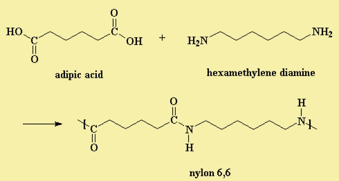

Nylon is a silk-like thermoplastic, generally made from petroleum, that can be melt-processed into fibers,
films, or shapes. It was first produced in early 1930s by the scientists at the DuPont Company.
Nylons can be very lustrous, semi-lustrous or dull.

Benefits of Nylon:
• It costs less to make, and it weighs less, making it easier to transport both the initial shipping, but
also the end product they are being used for.
• It is elastic and does not lose strength even after repeated use.
• Nylon is a tough material, so it remains strong even after long exposure to sun or even chemicals.
• The top reason to use nylon is that it is heat resistant.
• It is very tough and due to all of its other resistant properties, can last a very long time when compared
to aluminum and some other materials on the market.
Uses of nylon:
• It is used in making socks, tents, umbrellas, parachutes.
• It is also used in making climbing ropes, nylon threads and strings of badminton.
• It is used as plastic in manufacturing machine parts.
• It is used for making strings of musical instruments and as a thread in bristles for toothbrushes.
• It is used in the synthesis of artificial fibres.